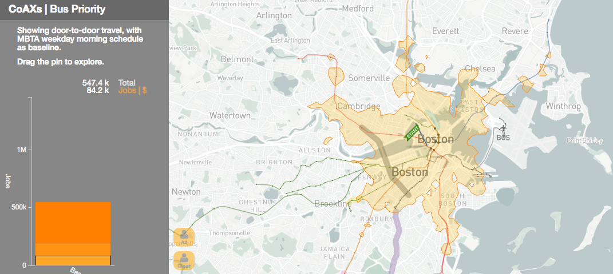

Current Visualization Research Work "CoAXs Tool".
CoAXs Boston v2.0
Link to CoAXs Demo
Mr. Navas is a Civil Engineer with focus on Transportation planning. He has been working for several year in Transit issues, Non Motorized Transport, and Infraestructure Planning. Currently, he is a 2017 Master of Science Candidate in the Department of Urban Studies and Planning (DUSP) at the Massachusetts Institute of Technology.
CoAXs Boston v2.0
Link to CoAXs Demo